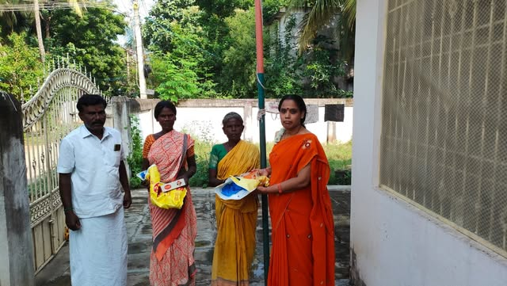

ADDITIONAL ACTIVITY
View this post on Facebook
Open the original post to see its caption and photographs.
● LEADERSHIP THROUGH SERVICE
U. Chithra B.A.
State Agriculture Wing Scheme Coordinator
Bharatiya Janata Party · Tamil Nadu
A personal record of community engagement, grassroots participation and public service across Tamil Nadu.

Small actions.
Meaningful connections.
A journey,
documented.
01 / THE JOURNEY
Responsibilities held across state and district wings, alongside ongoing engagement with local communities.
Read the complete portfolio ↗Appointment: 6 February 2023
Appointment: 21 March 2023
Additional responsibility: Cuddalore West District OBC Wing Observer
02 / THE ACTIVITY ARCHIVE
Explore the photographs and stories behind the journey, from recent activities to the earliest records.
ADDITIONAL ACTIVITY
Open the original post to see its caption and photographs.
THE COMPLETE RECORD
A structured portfolio with a profile, career milestones,
and the complete photographic archive.